식품기사 (2007-08-05 기출문제)
1과목: 식품위생학
1. 다음 중 환경오염물질 등에 기인한 내분비장에 물질이 아닌 것은?
- Furans
- Dihexly phthalste(DHP)
- Heterophyes heterophyes
- tributyltin(TBT)
(정답률: 59%)

2. D-Sorbitol을 상업적으로 이용할 때 합성하는 방법은?
- 과황산암모늄을 전해액에서 분리정제한다.
- 계피를 원료로 하여 산화시켜 제조한다.
- 포도당으로부터 화학적으로 합성한다.
- L-주석산을 탄산나트륨으로 중화하여 농축
(정답률: 77%)
3. 장염 비브리오균에 대한 설명으로 틀린 것은?
- 약 3%의 식염배지에서 잘 발육한다.
- Gram 음성이고 아포를 형성하지 않는다.
- 산성상태에서는 증식이 활발해진다.
- 편모를 가지며 운동성이 있다.
(정답률: 60%)
4. 식품 내의 수분활성도를 낮추고자 할 때 효과가 가장 작은 방법은?
- 설탕, 소금 등 용질을 가한다.
- 친수성 콜로이드를 만든다.
- 물을 결정화시킨다.
- PH 값을 떨어뜨린다.
(정답률: 59%)
5. 다음 중 채소류를 매개로 하여 감염될 수 있는 가능성이 가장 낮은 기생충은?
- 동양모양선충
- 구충
- 선모충
- 편충
(정답률: 67%)
6. 아래는 식품 등의 표시기준상 트랜스지방의 정의를 나타낸 것이다. ( )안에 들어갈 용어를 순서대로 나열한 것은?
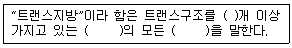
- 1 - 비공액형 - 불포화지방산
- 1 - 비공액형 - 포화지방산
- 2 - 공액형 - 불포화지방산(보기 내용이 정확하지 않습니다. 보기 내용을 아시는분께서는 오류신고를 통하여 보기 내용 작성 부탁 드립니다.)
- 2 - 공액형 - 불포화지방산(보기 내용이 정확하지 않습니다. 보기 내용을 아시는분께서는 오류신고를 통하여 보기 내용 작성 부탁 드립니다.)
(정답률: 82%)
7. mycotoxin의 종류가 아닌 것은?
- patulin
- sterigmatocysin
- fusariumtoxins
- lipovitellin
(정답률: 63%)
8. 알코올을 살균용도로 사용할 때 가장 일반적인 농도는?
- 100%
- 90%
- 70%
- 50%
(정답률: 81%)
9. 식품포장용기로 사용되는 유리에 대한 설명으로 틀린 것은?
- 유리재질에는 경질유리와 연질유리가 있다.
- 유리는 투명하며 위생적이고 기밀성이 좋다
- 비교적 독성이 적으나, 사용원료에 따라서는 비소, 납 등 중금속이 문제가 될 수 있다.
- 유리에서 제조과정 중 사용된 가소제가 용출될 수 있다.
(정답률: 69%)
10. 다음 중 수분함량 측정방법이 아닌 것은?
- Soxhlet 추출법
- 감압가열건조법
- Karl-Fisher법
- 상압가열건조법
(정답률: 91%)
11. 아래의 식중독 예방을 위한 위생관리에 대한 설명으로 ( )안의 균에 대한 설명으로 틀린 것은?
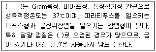
- 열에 강하여 일반조리방법으로는 살균되지 않는다.
- 개, 고양이 등 애완동물과 녹색거북이가 중요한 오염원이다.
- 저온 및 냉동상태에서 뿐만 아니라 건조에도 강하다.
- 적당한 습도가 되면 알껍질 내부에 침입하고 그 속에서 증식한다.
(정답률: 67%)
12. 아래의 반응식에 의한 제조방법으로 만들어지는 식품첨가물명과 주요용도를 옳게 나열한 것은?
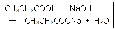
- 카르복시메틸셀룰로오스 나트륨 - 증점제
- 스테아릴젖산나트륨 - 유화제
- 차아염소산나트륨 - 합성살균제
- 프로피온산나트륨 - 보존료
(정답률: 70%)
13. 친환경농업육성방법 친환경농산물의 종류 명칭에 해당되지 않는 것은? (단, 축산물의 경우도 포함)
- 유기농산물
- 저항생제축산물
- 저농약 농산물
- 무항생제축산물
(정답률: 46%)
14. 식품을 채쥐, 제조, 가공, 조리, 저장, 운반 또는 판매하는 직접 종사하는 자는 연 1회 정기 건강진단을 받아야하는데, 다음 중 건강진단항목이 아닌 것은?
- 전염성 피부질환
- 장티푸스
- 이질
- 폐결핵
(정답률: 71%)
15. 식품 내에 존재하는 미생물에 대한 설명으로 틀린 것은?
- 곰팡이는 일반적으로 세균보다 먼저 생육한다.
- 수분활성도가 높은 식품에는 세균이 잘 번식한다.
- 수분활성도 0.6이하의 식품에서는 거의 모든 미생물의 생육이 저지된다.
- 당을 함유하는 산성식품에는 유산균이 잘 번식한다.
(정답률: 62%)
16. 단체급식이나 외식산업 HACCP의 7가지 원칙에 해당하지 않는 것은?
- 모니터링 방법 설정
- 검증방법 설정
- 기록유지 및 문서관리
- 공정흐름도 작성
(정답률: 68%)
17. 노로바이러스에 대한 설명으로 틀린 것은?
- 2006년 발생한 식중독 원인체 중에서 단일 병원체로는 가장 높은 발생률을 나타내었다.
- 노로바이러스 식중독은 주로 겨울철에 많이 발생하지만, 계절에 관계없이 발생하는 추세이다.
- 주요 원인식품은 노로바이러스 양성환자의 분변으로 오염된 물로 씻은 채소류 및 과일류, 오염된 패류물 등이다.
- 노로바이러스 입자를 10개 정도만 섭취하여도 감염되므로 무증상 감염이 존재하지 않는다.
(정답률: 62%)
18. 식품공전상 총칙의 내용으로 틀린 것은?
- 표준온도는 20℃, 상온은 15~25℃, 실온은 1~35℃, 미온은 30~40℃이다.
- 따로 규정이 없는 한 찬물은 15℃이하를 말한다.
- “타르색소”라 함은 타르색소의 알루미늄레이크를 포함한 것을 말한다.
- “무게를 정확히 단다.”라 함은 달아야 할 최소단위를 고려하여 0.1mg, 0.01mg, 0.001mg까지 다는 것을 말한다.
(정답률: 34%)
19. dioxin이 인체 내에 잘 축적되는 이유는?
- 물에 잘 녹기 때문
- 지방에 잘 녹기 때문
- 주로 호흡기를 통해 흡수되기 때문
- 극성을 가지고 있기 때문
(정답률: 82%)
20. 아래의 설명에 해당하는 인수공통전염병은?
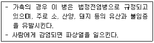
- 결핵
- 탄저
- 돈단독
- 브루셀라병
(정답률: 70%)
2과목: 식품화학
21. 다음 중 물에 녹고 가열에 의해 응고되는 단백질은?
- albumin
- protamine
- albuminoid
- glutelin
(정답률: 65%)
22. 다음 중 식품의 알칼리도를 구하는 공식은?
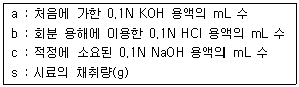
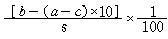
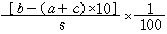
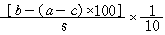
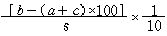
(정답률: 27%)
23. 감미가 강한 것부터 차례로 나열한 것은?
- sucrose > glucose > maltose > lactose
- glucose > maltose > sucrose > lactose
- sucrose > maltose > glucose > lactose
- glucose > sucrose > maltose > lactose
(정답률: 77%)
24. provitamin A에 대한 설명으로 틀린 것은?
- 식물 중에 있을 때는 비타민 A와 다른 화합물이다.
- α-carotene이 비타민 A로서의 효력이 가장 크다.
- 체내에서 유지와 공존하지 않으면 흡수율이 낮다
- β-ionone을 갖는 carotenoid 이다.
(정답률: 73%)
25. 비타민 B2의 주요 기능은?
- 성장촉진인자
- 혈액응고촉진인자
- 항악성빈혈인자
- 항피부염인자
(정답률: 44%)
26. carotenoid의 안전성에 가장 큰 영향을 주는 인자는?
- 산의 작용
- 알칼리의 작용
- 온도의 작용
- 산소에 의한 산화작용
(정답률: 49%)
27. 설탕에 소금 0.15%를 가했을 때 단맛이 증가되는 현상은?
- 맛의 강화현상
- 맛의 소실현상
- 맛의 변조현상
- 맛의 탈삽현상
(정답률: 88%)
28. 다음 중 매운 맛과 가장 거리가 먼 것은?
- 아민류
- 인산 화합물
- 황 화합물
- 벤젠핵을 가진 화합물
(정답률: 34%)
29. 산화방지제로 사용되는 BHT는 식품 제조시 stibenequinone을 형성하여 황색을 나타내는 경우가 있는데 추정 가능한 원인은?
- 고온에 의해 톨루엔이 변색되었다.
- 식품이나 포장재에 철이 함유되었다.
- 수산기로 인한 입체장애가 발생하였다.
- 식품 중 구리 성분에 의해 산화반응이 일어났다.
(정답률: 15%)
30. 메밀묵을 만들기 위하여 메밀전분을 갈아서 만든 유동성이 있는 액체성 물질을 가열하고 난 뒤 냉각하였더니 반고체 상태(묵)가 되었다. 이 묵의 교질상태는?
- 젤(gel)
- 졸(sol)
- 염석
- 유화
(정답률: 80%)
31. 고기류의 성분 및 성질을 설명한 것 중 틀린 것은?
- 고기류의 감칠맛을 내는 성분에는 글루타민, 이노신산, 퓨린염기, 크레아틴 등이 있다
- 고기를 가열하면 회갈색으로 변화되는데 이것은 미오글로빈이 메트미오글로빈이 되기 때문이다.
- 고기류가 상하면 나는 냄새의 물질은 트리메틸아민옥사이드로 그 악취가 매우 심하다.
- 고기류의 신소도가 낮아지면 독서이 큰 프토마인(ptomaine)이 생겨 가끔 식중독의 원인이 되기도 한다.
(정답률: 66%)
32. 고체식품에서 항복응력(yield stress)을 초과할 때까지 영구변형이 일어나지 않는 성질은?
- 탄성체
- 가소성체
- 점탄성체
- 완형장치
(정답률: 66%)
33. 쇠고기와 양고기의 지방산은 닭고기, 돼지감자의 지방산 조성에 비하여 어떤 지방산의 함량이 높아 상대적으로 높은 융점을 갖게 되는가?
- 스테아르산
- 팔미트산
- 리놀레산
- 올레산
(정답률: 46%)
34. 다음 중 질소화산계수가 가장 큰 식품은?(오류 신고가 접수된 문제입니다. 반드시 정답과 해설을 확인하시기 바랍니다.)
- 쌀
- 팥
- 대두
- 밀
(정답률: 70%)
35. 다이어트 식품소재로 사용되는 복합 다당류인 클루코만난(glucomannan)을 함유하고 있는 것은
- 토란
- 카사바
- 곤약
- 돼지감자
(정답률: 75%)
36. 자유라디칼(유리라디칼)에 대한 설명으로 옳은 것은?
- 짝수개의 비공유전자를 갖는다.
- 과산화물을 산소로 분해한다.
- 할로겐과는 반응하지 않는다.
- 비닐 단위체의 중합 반응에 관여한다.
(정답률: 41%)
37. 1g의 어떤 단당류 화합물을 20mL의 메탄올에 용해시킨 후 10㎝두께의 편광기에 넣고 광회전도를 측정하였더니 (+)5.0°가 나왔다. 이 화합물의 고유 광회전도는?
- (-)100°
- (-)50°
- (+)50°
- (+)100°
(정답률: 50%)
38. 우유의 성질에 대한 설명으로 옳은 것은?
- 락트알부민은 유청이라고 불리며 pH4.6에서 응고한다.
- 카제인에 renin을 첨가하면 응고되면서 치즈가 만들어진다.
- 채소나 과일의 페놀화합물인 탄닌류는 카제인의 응고를 방해한다.
- 신선한 원유에는 비타민 D가 필요량만큼 함유되어 있으며 자외선에 의해 에고스테롤로 전환된다.
(정답률: 67%)
39. 동물성 단백질에 대한 설명으로 옳은 것은?
- 불용성 단백질인 콜라겐은 80℃로 가열하면 가용성의 젤라틴으로 변한다.
- 액틴과 미오겐의 결합체는 헥소키나아제에 의하여 분리되면서 근육의 이완ㆍ수축이 이루어진다.
- 액틴은 구형의 F-actin과 선형의 G-actin으로 두 가지가 있으며 이들은 가역적으로 변화한다.
- 엘라스틴은 구조사 알파 헬리그 형태구조를 갖고 있어 고무와 같은 탄력으로 인대조직에 존재한다.
(정답률: 56%)
40. 콜로이드 입자의 성질이 아닌 것은?
- 브라운운동(Brou주 movement)
- 틴달혀낭(Tyndal effect)
- 반투막통과
- 흡착작용
(정답률: 30%)
3과목: 식품가공학
41. 밀가루의 제분 후 인공적인 산화를 시키는 첨가물 중 국내에서 사용할 수 없는 것은?
- Chlorine Dioxide
- Diluted Benzoyl Peroxide
- Potassium Bromate
- Ammonium Persulfate
(정답률: 29%)
42. 백미 성분 중 도정률이 높아짐에 따라 가장 큰 비율로 감소하는 것은?
- 지방
- 단백질
- 탄수화물
- 수분
(정답률: 42%)
43. 제빵에서 가스빼기 하는 목적이 아닌 것은?
- 신선한 공기를 효모에게 공급한다.
- 반죽 안팎의 온도를 균일하게 한다.
- 인체에 유해한 가스를 배출하기 위함이다.
- 효모에게 새로운 영양분을 공급하는 효과를 얻는다.
(정답률: 59%)
44. 김치의 초기 발효에 관여하는 저온숙성의 주 발효균은?
- Leuconstoc mesenteroides
- Lactobacillus plantarum
- Bacillus macerans
- Pediococcus cerevisiae
(정답률: 78%)
45. 대형 아이스크림 제조에 알맞은 over run 범위는?
- 3±1%
- 9±1%
- 30±1%
- 90±10%
(정답률: 73%)
46. 20% 유지성분을 함유하는 콩 200kg을 2%의 유지를 함유하는 용매 미셀라(miscella) 200kg으로 추출한 결과 20%의 유지를 함유하는 미셀라 160kg을 얻었다. 이 때 추출잔사에 잔존된 유지량은 몇 kg인가?
- 8.2kg
- 9.6kg
- 12.0kg
- 15.2kg
(정답률: 48%)
47. 증기압축식 냉동장치에 흔히 사용되는 냉동제가 아닌 것은?
- 암모니아
- 프레온12(CCl2F2)
- 프레온22(CHClF2)
- 액체질소
(정답률: 30%)
48. 진공계를 사용하여 복숭아 통조림의 진공도를 측정하였더니 지시진공도가 30cmHg 였고 이 통조림의 head space가 4mL이었을 때 이 통조림의 진진공도는? (단, Bourdon관의 내용적은 1.2mL 이다.)
- 31.2cmHg
- 29.6cmHg
- 39.0cmHg
- 30.4cmHg
(정답률: 23%)
49. 38.35% H2SO4 수용액이 담긴 밀폐용기 내의 곶감을 보관하였더니 평형상태에서 중량의 변화가 없었다. 곶감의 수분활성도는? (단, 38.35% H2SO4 수용액의 상대습도는 60%)
- 0.62
- 0.60
- 61.65
- 60.00
(정답률: 55%)
50. 식품첨가물로 사용되는 Hexane에 대한 설명으로 틀린 것은?
- 주로 n-헥산을 함유한다.
- 무색투명한 휘발성 액체이다.
- 유지류를 비롯해 향료 및 그 외 성분의 추출 등에 사용된다.
- 식품 등에 잔류해서는 안 된다.
(정답률: 57%)
51. 아래에서 설명하는 기능성 원료는?
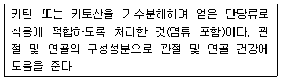
- 프락토올리고당
- 뮤코다당ㆍ단백
- 키토산분말
- 글루코사민 분말
(정답률: 44%)
52. 햄 제조에 대한 설명으로 틀린 것은?
- 염지방법은 건염법, 액염법, 염지주사법 등이 있다.
- 염지는 15℃ 정도에서 하는 것이 효과적이다.
- 훈연은 향미, 외관, 색깔, 보존성을 증진한다.
- 훈연방법은 냉훈법, 온훈법, 고온훈연법 등이 있다.
(정답률: 84%)
53. 자일리톨(xylitol)에 대한 설명으로 틀린 것은?
- 자작나무, 떡갈나무, 옥수수 등 식물에 주로 들어 있는 천연 소재의 감미료로 청량감을 준다.
- 자일로스에 수소를 첨가하여 제조하는 기능성 원료이다.
- 자일리톨은 입안의 충치균이 분해하지 못하는 7탄당 구조를 가지고 있다.
- 한 번에 40g 이상 과량으로 섭취할 경우 복부팽만감 등의 불쾌감을 느낄 수 있다.
(정답률: 81%)
54. 유당분해효소결핍증에 직접적으로 관여하는 효소는?
- 락토페록시다제
- 라소자임
- 락타아제
- 락테이트 디하이드로지나제
(정답률: 74%)
55. 전통적인 제조법에 의해 두유를 제조할 때 불쾌한 냄새와 맛이 나고 두유의 수율이 낮은 문제가 생길 수 있는데, 이를 개선하는 방법이 아닌 것은?
- 끊는 물(80~100℃)로 콩을 마쇄하여 지방산패나 콩 비린내를 발생시키는 lipoxygenase를 불활성시키는 방법
- 콩을 NaHCO3용액에 침지시켜 불린 뒤, 마쇄 전과 후에 가열처리해서 콩 비린내를 없애는 방법
- 데치기 전에 콩을 수세하고 껍질을 벗겨 사용하는 방법
- 낮은 온도에서 장시간 가열하여 염에 대한 노출을 증가시키는 방법
(정답률: 75%)
56. 토마토 케찹 제조시 갈색이 발생하였다면 그 주된 원인은?
- 토마통의 적색 색소인 리코펜(lycopene)이 가열과정 중에 산화되었기 때문
- 토마토의 색소성분인 카로티노이드가 알칼리 성분에 의해 착색화합물을 생성하였기 때문
- 토마토의 함유된 당이 가열되어 효소적 갈변이 진행되었기 때문
- 토마토에 함유된 유기산과 리코펜이 반응하여 착색물질을 생성하였기 때문
(정답률: 50%)
57. 식육은 가열처리 과정 중 색이 갈색으로 변하는 반면, 가공품인 소시지, 햄 등은 가열처리후에도 갈색으로 변하지 않는데 그 주된 이유는?
- 축산 가공품 제조시 사용되는 인산염의 작용에 의해 nitrosometmyoglobin으로 전환되기 때문이다.
- myoglobin 등의 성분이 아질산염 또는 질산염과 반응하여 nitorosomyglobin으로 전환되기 때문이다.
- 훈연과정 중에 훈연성분과 반응하여 선홍색이 생성되기 때문이다.
- 근육성분이 myoglobin이 가열과정 중에 변색되어 melanoidin색소를 만들기 때문이다.
(정답률: 74%)
58. 식품에 방사선을 처리하는 공정에 대한 설명으로 틀린 것은?
- 방사선을 조사하면 온도가 상승하므로 냉동식품살균은 불가능하다.
- 비타민 B1은 감마선에 비교적 민감한 반면 비타민 B2는 그렇지 않다
- 방사선 처리시 formic acid, acetaldehyde 등의 분해물이 생성된다.
- 방사선량의 단위는 Gy이며 1Gy는 1J/kg에 해당한다.
(정답률: 75%)
59. 아래 그림과 같은 증방기의 병칭은?(복원 오류로 그림 파일이 없습니다. 정답은 2번 입니다. 그림파일을 가지고 계신 분께서는 관리자메일로 보내 주시면 감사하겠습니다.)
- 하강박막식 증발기
- 상승박막식 증발기
- 상승-하강 박막식 증발기
- 기계박막식 증발기
(정답률: 74%)
60. 트랜스지방에 대한 설명으로 틀린 것은?
- 커피프림은 야자유를 100% 경화시켜 사용하므로 트랜스지방 함량이 높다.
- 마요네즈는 대두유나 옥수수유와 같은 식물성 유지를 사용하므로 트랜스지방 함량이 낮다.
- 트랜스지방을 함유한 유지는 특유의 고소한 냄새와 맛을 내는 경화취를 가지고 있다.
- 유지를 햇빛에 장시간 노출시키면 산패는 발생되지만 트랜스지방은 늘어나자 않는다.
(정답률: 30%)
4과목: 식품미생물학
61. 다음 중 균사에 격막을 갖지 않는 균은?
- Aspergillus niger
- Pnicillum notatum
- Mucor hiemalis
- Aspergillus sojae
(정답률: 66%)
62. 사출포자를 형성하지 않는 효모는?
- Candida 속
- Aproidiobolus 속
- Sporobolomyces 속
- Bullera 속
(정답률: 60%)
63. Sacchramyces 속에 대한 설명 중 틀린 것은?
- 다극출아법으로 분열한다.
- 담자포자를 형성한다.
- 위균사를 형성하기도 한다.
- 체세포는 구형, 타원형, 원통형 등이다.
(정답률: 47%)
64. 다음 중 유성생식이 불가능한 것은?
- 세균류
- 효모류
- 곰팡이류
- 버섯류
(정답률: 57%)
65. Torulopsis 속과 다른 미생물의 비료 설명으로 틀린 것은?
- Candida 속과 다리 위균사를 형성하지 않는다.
- Vibrio 속과 달리 내염성이 약하다.
- Rhodotorula 속과 달리 carotenoid 색소를 생성하지 않는다.
- Crytococcus 속과 달리 전분과 같은 물질을 만들지 않는다.
(정답률: 45%)
66. 송이버섯목, 백목이균목 등과같은 대부분의 버섯은 미생물 분류학상 어디에 속하는가?
- 담저균류
- 자낭균류
- 편모균류
- 접합균류
(정답률: 66%)
67. 액체 식품 중의 생존균수를 희석평판 배양법으로 아래와 같이 측정하였을 때 식품 1ml 중의 colony 수는?
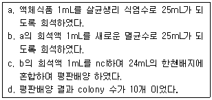
- 6.0×103
- 6.3×103
- 1.5×105
- 1.6×105
(정답률: 56%)
68. 염장어, 육제품, 우유의 적변을 일으키는 세균은?
- Acetobacter xylium
- Serratia marcescens
- Chromobacterium lividum
- Pseudomonas Fluorescens
(정답률: 65%)
69. 다음 중 유기물을 이용하여 생육하는 세균은?
- 수소세균
- 유황산화세균
- 철세균
- 초산균
(정답률: 72%)
70. Gram 양성균의 세포벽 성분은?
- peptidoglycan, teichoic acid
- lipopolysaccharide, protein
- polyphosphate, calcium dipichlinate
- lipoprotein, phospholipid
(정답률: 74%)
71. 황변미는 여름철 쌀의 저장 중 수분 15~20%에서도 미생물이 번식하여 대사독성물질이 생성되는 것인데 다음 중 이에 관련된 미생물은?
- Bacillus subtillis, Bacillus mesentericus
- Lactobacillus plantarum, Escherichia coli
- Penicillus citrinum, Penicillus islandium
- Mucor rouxii, Rhizopus delemar
(정답률: 72%)
72. 진핵세포로 이루어져 있지 않은 것은?
- 곰팡이
- 조류
- 방선균
- 효모
(정답률: 38%)
73. 유전자 조작에 이용되는 벡터(Vector)가 가져야 할 특징으로 바람직하지 않은 것은?
- 숙주역(host range)이 넓어야 한다.
- 제한효소에 의해 절단되는 부위가 적어야 한다.
- 세포 외에서의 copy 수가 많아야 한다.
- 재조합 DNA를 검출하기 위한 표지(marker)가 있어야 한다.
(정답률: 46%)
74. 유전적 재조합(genetic recombination) 방법이 아닌 것은?
- 형질전환(transformation)
- 형질도입(transduction)
- 돌연변이(mutation)
- 접합(conjugation)
(정답률: 68%)
75. 방출까지의 바이러스 증식 단계가 올바르게 표현된 것은?
- 부착-주입-단백외투 합성-핵산복제-조립
- 주입-부착-단백외투 합성-핵산복제-조립
- 부착-주입-핵산복제-단백외투 합성-조립
- 주입-부착-조립-핵산복제-단백외투 합성
(정답률: 70%)
76. DNA의 수복기구가 아닌 것은?
- 광회복
- 제거수복
- 재조합수복
- 염기수복
(정답률: 58%)
77. 병원성 대장균(pathogenic E. coli)에 대한 설명으로 틀린 것은?
- 병원성 대장균은 독소형 식중독만 일으킨다.
- E. coli 0157:H7 균주는 베로톡신(verotoxin)을 생성하여 식중독을 일으킨다.
- 장관침입성 대장균은 상피세포에 침입하여 증식하므로, 세포점막을 괴사시킨다.
- 장관독소원성 대장균의 감염증상은 장염과 설사이다.
(정답률: 69%)
78. 곰팡이의 분류나 동정에 적용되지 않는 항목은?
- 균사의 격벽의 유무
- 편모의 존재와 형태 및 위치
- 유성포자 형성 여부 및 종류
- 무성포자의 종류
(정답률: 70%)
79. Propionibacterium속의 특성과 관계없는 것은?
- 그램양성균
- 운동성균
- propionic acid 발효
- catalase 양성
(정답률: 44%)
80. Leuconstoc mesenteroides의 영양요구 성분이 아닌 것은?
- ρ-aminobenzoic acid
- biotin
- thiamine
- pyrimidine
(정답률: 44%)
5과목: 생화학 및 발효학
81. aspartic acid의 pK1(-COOH)=1.88, pK2 (-NH3+)=9.60, pKR(-R기)=3.65일 때 등전점은?
- 2.77
- 3.22
- 7.36
- 9.74
(정답률: 38%)
82. 아래와 같은 반응으로 만들어지는 최종생성물은?
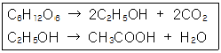
- 식초
- 요구르트
- 아미노산
- 헥산
(정답률: 78%)
83. 광합성 과정은 명반응과 암반응으로 구분되는데 암반응 과정에서 주로 일어나는 현상은?
- 포도당 합성
- NADP의 환원
- ATP의 합성
- 전자전달계의 활성화
(정답률: 26%)
84. 연속배양의 장점이 아닌 것은?
- 장치용량을 축소할 수 있다.
- 작업시간을 단축할 수 있다.
- 생산이 증가한다.
- 배양액 중 생산물의 농도가 훨씬 높다.
(정답률: 65%)
85. 아래의 반응식에서 HCO3-의 수송체는?
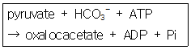
- NAD+
- biotin
- H+
- rutin
(정답률: 31%)
86. 재조합 DNA기술에 이용되는 akaline phosp- hatase의 기능은
- 염기서열에서 DNA를 절단한다.
- 5' 또는 3' 말단에서 말단의 인산을 제거한다.
- polynucleotide의 5'-OH 말단에 인산을 연결한다.
- 두 개의 DNA를 이어준다.
(정답률: 49%)
87. electron transport system에서 cytochrome C의 전자전달 기능을 수행하는 금속성분은?
- Fe
- Mn
- Cu
- Mo
(정답률: 53%)
88. 청주양조용 쌀로 부적합한 것은?
- 연질미로 흡수가 빠른 것
- 단백질 함량이 높은 것
- 쌀알 중심의 희고 불투명한 부분이 많은 것
- 수분이 14% 정도인 것
(정답률: 53%)
89. 전분 1000kg으로부터 얻을 수 있는 100% 주정의 이론적 수득량은?
- 586kg
- 568kg
- 534kg
- 511kg
(정답률: 25%)
90. streptomyces aureus 효소를 이용하여 5'- nucleotidesfmff 만들 때, RNA분해 시 sodium arsenate(SA)를 넣어 반응시키는 이유는?
- SA는 효소반응의 활성제로 작용된다.
- SA는 5'-phosphodiesterase에만 특이하게 반응되어 활성화된다.
- SA는 phosphomonoesterase의 inhibitor로 작용되어 유리 인산의 생성을 저해한다.
- AMP deaminase의 inhibitor로 작용한다.
(정답률: 43%)
91. cholesterol 합성에 관여하는 HGM-CoA(beta -hydroxy-beta-methylglutaryl-CoA) redutase의 인산화(불활성화)와 탈인산화(활성화)에 관여하는 호르몬이 순서대로 바르게 짝지어진 것은?
- glucagon - insulin
- insulin - glucagon
- thyroxine - thyrotropin-releasing hormo- ne(TRH)
- thyrotropin-releasing hormone(TRH) - Th- yroxine
(정답률: 48%)
92. 과일주 향미의 주성분은?
- alcohol
- ether derivatives
- esters and derivatives
- glutamate
(정답률: 73%)
93. ethanol, lactate, acetate 등의 발효에 사용되는 해당과정 중의 주요 중간산물은?
- 1,3-diphosphoglyceric acid
- glyceraldehyde-3-phosphate
- phosphoenol pyruvate
- pyruvate
(정답률: 31%)
94. biotin 과잉배지에서 glutamate 발효 시 첨가하는 물질은?
- vit B12
- thiamine
- penicillin
- vit C
(정답률: 65%)
95. 발열반응과 흡열반응에서의 엔탈피(H)를 바르게 설명한 것은?
- 발열반응과 흡열반응의 △H는 모두 음이다.
- 발열반응과 흡열반응의 △H는 모두 양이다.
- 발열반응의 △H는 양의 값이고, 흡열반응의 △H는 음의 값이다.
- 발열반응의 △H는 음의 값이고, 흡열반응의 △H는 양의 값이다.
(정답률: 54%)
96. 산업폐수 처리방법 중 호기적 처리법인 것은?
- 가스발효법
- 산발효법
- 소화발효법
- 활성오니법
(정답률: 75%)
97. 당밀의 알콜발효 시 밀폐식 발효의 장점이 아닌 것은?
- 잡균오염이 적다.
- 소량의 효모로 발효가 가능하다.
- 운전경비가 적게 든다.
- 개방식 발효보다 수율이 높다.
(정답률: 64%)
98. invertase의 대한 설명으로 틀린 것은?
- 활성 측정은 sucrosedp 결합되는 산화력을 정량한다.
- sucrase 또는 saccharase라고도 한다.
- 가수분해와 fructose의 전달반응을 촉매한다.
- sucrose를 다량 함유한 식품에 첨가하면 결정 석출물을 막을 수 있다.
(정답률: 27%)
99. 생체 내 고에너지 화합물과 거리가 먼 것은?
- porphyrin
- pyrophosphate
- acyl phosphate
- thiol ester
(정답률: 51%)
100. DNA로부터 단백질 합성까지의 과정에서 t-RNA의 역할에 대한 설명으로 옳은 것은?
- m-RNA 주형에 따라 아미노산을 순서대로 결합시키기 위해 아미노산을 운반하는 역할을 한다.
- 핵안에 존재하는 DNA정보를 읽어 세포질로 나오는 역할을 한다.
- 아미노산을 연결하여 protein을 직접 합성하는 장소를 제공한다.
- 합성된 protein을 수식하는 기능을 한다.
(정답률: 74%)